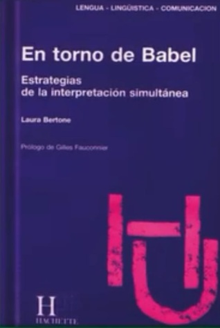

Conocí a Laura Bertone en el año 2023, durante la apertura del VII Congreso Latinoamericano de Traducción e Interpretación, organizado por el Colegio de Traductores Públicos de la Ciudad de Buenos Aires. Recuerdo que me causó una impresión sumamente grata: una mujer bella, refinada, elegante por fuera y exquisita por dentro. De mente abierta, con una trayectoria profesional destacada, un conocimiento del mundo admirable y un carácter afable, natural y sin atisbos de jactancia, como suele suceder con las personas cuyo desempeño y obra hablan por sí mismos.
En aquella oportunidad, Laura dedicó gran parte de su exposición a reflexionar sobre su profesión y compartió anécdotas enriquecedoras, entre ellas, algunas relacionadas a su vínculo con María Kodama y Jorge Luis Borges.
Años más tarde, Javier Areco, director de la biblioteca de nuestra universidad, mencionó ser sobrino de Laura y expresó su fascinación por el vasto e interesante mundo de su tía. Esta cercanía permitió extenderle una invitación para que brindara una charla dirigida a estudiantes del Traductorado Público, y especialmente a quienes cursaban la asignatura optativa de Interpretación. Una vez más, Laura deslumbró por su erudición y calidez.
Como traductora pública, en distintos momentos de mi trayectoria tuve la oportunidad de realizar trabajos de interpretación en empresas. También asistí a un curso breve, meramente ilustrativo, sin casi práctica, dictado por Emilio Stevanovich, un reconocido intérprete de la época. Más allá de estas aproximaciones, nunca consideré dedicarme a la interpretación. Simplemente deseaba explorarla, aunque siempre me sentí guiada más por la intuición que por la técnica, lo que me generaba un estado de ansiedad constante durante las interpretaciones. Si bien se trataba de trabajos bien remunerados y me sentía satisfecha tras completarlos, lo cierto es que no los disfrutaba plenamente y terminaba exhausta. Con el tiempo, comprendí que prefería la traducción escrita por sobre la oralidad que implica la interpretación y la gran exposición que la caracteriza, aunque siempre reconocí el gran valor que encierra esa actividad.
Tras la visita de Laura Bertone a la Universidad Nacional de Lanús, sentí la necesidad de profundizar más en este campo. Así fue como conseguí una de sus obras: En torno de Babel, estrategias de la interpretación simultánea, redactada en español y eje de la reseña que presento a continuación.
Para comenzar, presentaré formalmente a la autora, destacando su sólida formación académica. Laura Bertone es intérprete, escritora, conferencista y docente, y ha publicado numerosos libros, ensayos y artículos sobre interpretación simultánea en español, inglés y francés. Nacida en Buenos Aires, se formó como intérprete en una época en la que aún no existían carreras sistematizadas en esta disciplina. Se graduó como maestra en el Instituto Lenguas Vivas y como profesora de inglés en el Instituto Superior del Profesorado Joaquín V. González, donde recibió la medalla de oro por su desempeño académico. Se formó en interpretación con Emilio Stevanovich, uno de los pioneros del campo en la Argentina y figura clave en su desarrollo profesional. Más adelante, cursó estudios en la prestigiosa École Supérieure d'Interprètes et de Traducteurs (ESIT) de París. Allí obtuvo el Diploma de Estudios Avanzados en Interpretación en la Sorbonne Nouvelle y, posteriormente, el doctorado en Lingüística en la Universidad de París VIII, con una especialización en comunicación, procesos cognitivos y semántica general.
Quienes busquen en En torno de Babel una colección de anécdotas extraídas de la vasta experiencia profesional de la autora, quizás se vean algo decepcionados. El libro va mucho más allá. Si bien los casos mencionados surgen de su práctica, están al servicio de un análisis profundo de fenómenos lingüísticos complejos, que exceden lo previsible y cuestionan lo que solemos naturalizar en el uso del lenguaje. Estas situaciones, propias del quehacer cotidiano del intérprete, revelan una complejidad que desborda su aparente simplicidad, y permiten explorar los recursos necesarios para enfrentar las barreras que surgen en pleno acto interpretativo.
Laura cuenta cómo llevó a la práctica los vastos conocimientos adquiridos durante su formación universitaria, en campos tan diversos como la lingüística, la filosofía del lenguaje, la semiología, la psicolingüística, la psicología, la sociología, la comunicación, el psicoanálisis y el teatro. Es, sin duda, una scholar en todo el sentido de la palabra. Alcanzaría con echar un vistazo a la sección de Bibliografía — poblada de figuras clave en cada una de esas áreas — para intuir el enorme trabajo que encaró.
Sin embargo, no se apoyó únicamente en su talento natural, ni en su experiencia o conocimiento del mundo para lograr buenas interpretaciones. Fue mucho más allá: se propuso desentrañar con rigor los vericuetos del lenguaje, identificar sus trampas, brechas, prejuicios y silencios. Lo hizo con una entrega absoluta, marcada por una responsabilidad casi obsesiva por mejorar, por no dejar pasar ni un error sin revisar. Cuando sentía que algo no había salido bien —por omisión, error o bloqueo—grababa su desempeño y volvía a escucharlo una y otra vez, hasta comprender qué había ocurrido. Como aquella vez en la que no pudo —o no se atrevió— a traducir la palabra prostitutas, al escucharla salir de la boca de un obispo. Más tarde reconocería que se había autocensurado, víctima, según sus propias palabras, de “un prejuicio idiota”. Así, grabación tras grabación, enfrentaba esas zonas incómodas del lenguaje, decidida a no dejarlas pasar sin respuesta.
El libro comienza con un recorrido por la historia de la interpretación, desde la Antigüedad hasta tiempos contemporáneos. Aparecen figuras clave que rompieron barreras lingüísticas en busca de una comunión universal: Hermes, mensajero entre dioses y mortales; los intérpretes de faraones y reyes persas, llamados "herramientas" —término derivado de Hermes, origen también de la hermenéutica—; Aarón, portavoz de Moisés; Don Luis de Torres, intérprete políglota embarcado por Colón, que finalmente no resultó útil ante los pueblos originarios; Doña Marina o la Malinche, princesa india esclavizada por Cortés y también su intérprete, una figura crucial en la conquista, un personaje ambiguo entre traición y el símbolo mismo del mestizaje de las culturas. Con la Primera Guerra Mundial y la creación de la Sociedad de las Naciones (1919), resurge el anhelo de entendimiento entre los pueblos y sus individuos. Los intérpretes, entonces hombres cultos, realizaban traducción consecutiva, tomando apenas notas para reconstruir discursos de hasta treinta minutos en un solo idioma, antes de verterlos a las demás lenguas involucradas. Basta imaginar esos procesos para comprender la monumental complejidad de la tarea. En 1945, tras el fin de la Segunda Guerra Mundial, el Tribunal Militar Internacional implementa un nuevo sistema: los intérpretes, con micrófonos y auriculares, traducen en tiempo real. Nace así la interpretación simultánea. En la actualidad, toda reunión habitual en la Unión Europea o el Parlamento Europeo exige traducir un discurso a nueve o diez idiomas, a menudo mediante hasta dos relés, es decir, interpretaciones encadenadas, en las que un intérprete traduce no desde el original, sino desde otra interpretación intermedia. (Vale aclarar que el libro fue publicado en 1989, por lo que seguramente mucha agua ha corrido bajo el puente desde entonces).
Lo que antecede es una mirada fugaz a la evolución histórica de la interpretación. A continuación, Bertone emprende un análisis lingüístico profundo. La lectura detallada de los fenómenos abordados desde cada una de las disciplinas previamente mencionadas quedará en manos de los especialistas y de quienes deseen adentrarse en el universo complejo de esta práctica. Conocer estos aspectos más profundos quizás no transforme la interpretación de forma inmediata, pero tomar conciencia de ellos y trabajarlos con constancia y atención, adentrándose en los niveles más sutiles del proceso, puede ser sumamente valioso a largo plazo. Bertone ha realizado un trabajo inmenso: observar, analizar, señalar con agudeza y proponer soluciones inteligentes para optimizar la labor del intérprete.
En lo personal, disfruté profundamente la lectura de este libro. Considero que es un material esencial para la formación de un intérprete sólido: aquel que, combinando una destreza natural con una base lingüística rigurosa, puede alcanzar un desempeño verdaderamente destacado.
Gilles Fauconnier, en el prólogo del libro, define al intérprete como “un ilusionista que hace hablar al orador simultáneamente en todas las lenguas de Babel y que, por si fuera poco, se ve obligado, contrariamente al prestidigitador, a no mostrar jamás que realiza una proeza.” Y aunque coincido con esa imagen poderosa —porque se sabe que el protagonista siempre es el orador—, creo fervientemente que el intérprete, antes que nada, debe reconocerse a sí mismo como el elemento clave de esa proeza, y admirarse de la belleza del lenguaje que maneja, de la seriedad con la que debe actuar y de la necesidad de agotar todos los recursos para que sus interpretaciones sean veraces y ajustadas. Entre esos recursos, vale destacar las valiosas sugerencias y contribuciones que Laura Bertone ofrece en En torno de Babel, herramientas fundamentales para los intérpretes para seguir perfeccionándose y, sobre todo, para brillar ante sí mismos, porque en ese silencio trabajado, en esa entrega invisible, hay un acto de creación constante. Y en ese gesto silencioso también reside la verdadera grandeza del intérprete.
Sobre la autora

María Victoria Illas es Traductora Pública de Inglés egresada de la Universidad Católica Argentina. Docente en la UNLa de las materias Traducción Técnica II y III desde el año 2009 hasta el 2023. En la actualidad, ya retirada del aula, es tutora y correctora del Programa de Prácticas Preprofesionales y tutora/ evaluadora de trabajos finales y editora de la revista de la carrera “En otras palabras/In other words”. Traductora free-lance especializada en Medicina y Farmacología. Traductora y correctora de inglés de la Revista Argentina de Microbiología editada por la Asociación Argentina de Microbiología. Traductora y correctora de estilo de trabajos de investigación médicos. En continua capacitación académica. Amante de la literatura desde siempre y de tantas otras cosas, entre ellas, su profesión, la danza, el arte, la música, los viajes, los libros, el cine y el teatro.